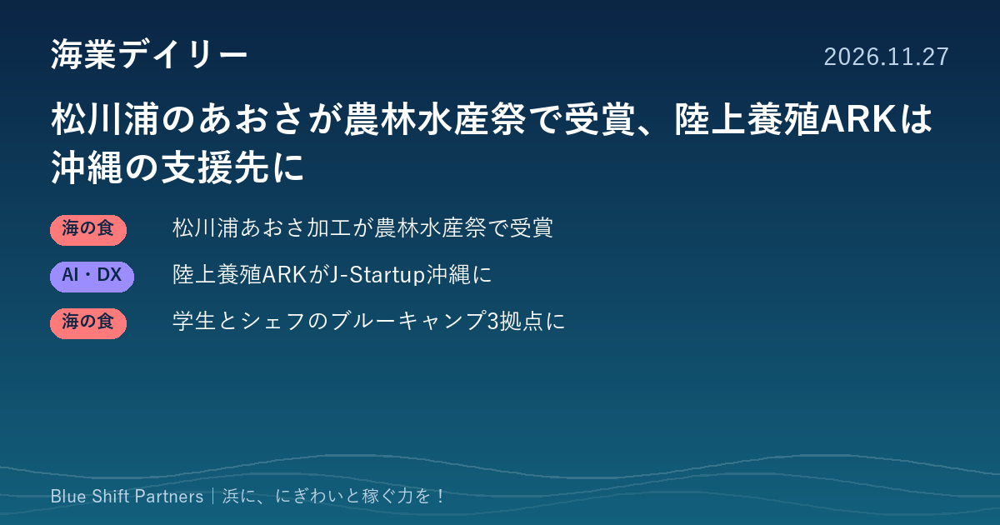

2026.11.27
松川浦のあおさが農林水産祭で受賞、陸上養殖ARKは沖縄の支援先に

本日は、浜の事業者や団体が自ら発表した3つの話題をお届けします。福島・松川浦のあおさを万能調味料にした加工会社の受賞、陸上養殖スタートアップの沖縄での選定、そして学生とシェフが魚食の未来を考える人材育成プログラムです。
福島・相馬市のマルリフーズ、松川浦産あおさの調味料化で農林水産祭「日本農林漁業振興会会長賞」を受賞
福島県相馬市の水産加工会社マルリフーズは、松川浦産あおさの品質向上と魅力発信の取り組みが評価され、第65回（令和8年度）農林水産祭の水産部門で日本農林漁業振興会会長賞を受けたと発表しました。授賞式は11月23日に明治神宮会館で行われました。地元の漁業者や小田原屋と連携し、あおさをオイルに漬けた万能調味料「松川浦かけるあおさ」シリーズを開発して、味噌汁の具以外の食べ方を広げてきたことが評価されたとしています。
ここがポイント：震災で一度途絶えた産地の素材を、パンやパスタにも使える商品に仕立て直して販路を広げた例です。地元の海藻や小魚を「いつもの使い方」から一歩ずらして商品化したい加工業者や漁協にとって、参考になる道筋です。
出典：株式会社マルリフーズ（PR TIMES）「松川浦産あおさの品質向上と魅力発信で、マルリフーズが第65回農林水産祭『日本農林漁業振興会会長賞』を受賞」（2026-11-26）
陸上養殖スタートアップのARK、沖縄の有望スタートアップ支援「J-Startup OKINAWA」に選定
モジュール型の閉鎖循環式陸上養殖システムを開発する株式会社ARK（本社・神奈川県平塚市）は、11月25日に「J-Startup OKINAWA」の選定企業に選ばれたと発表しました。J-Startup OKINAWAは、経済産業省のスタートアップ育成支援プログラム「J-Startup」の地域版です。同日沖縄県内で開かれたお披露目式典では、選定企業6社がピッチを行い、ARKは事業の現状や今後めざす連携（事業連携や実証フィールドなど）を紹介したとしています。
ここがポイント：陸上養殖のシステムを手がける会社が、実証フィールドを含む連携の方向を公の場で示しています。遊休地や漁港用地の使い道を考える自治体・漁協にとって、陸上養殖の相手先を知る手がかりになります。
出典：株式会社ARK（PR TIMES）「食料安全保障の実現に挑む陸上養殖スタートアップARK、『J-Startup OKINAWA』に選定」（2026-11-26）
学生24名がシェフと魚食の未来を考える「ブルーキャンプ2026」、九州を加え3拠点に
料理人らでつくる一般社団法人Chefs for the Blueは、学生向けの海と食の実践プログラム「ブルーキャンプ2026」の参加学生24名を決めたと発表しました。4回目の今年は九州で初めて開き、関東・関西・九州の各8名がチームを組み、2027年2月末から3月にかけて、福岡・東京・京都で期間限定のレストランを開く予定です。11月14日・15日には静岡県伊東市でキックオフ合宿を行い、定置網への乗船などのフィールドワークをしたとしています。日本財団の助成、水産庁の後援を受けた取り組みで、11月26日からクラウドファンディングも始めています。
ここがポイント：料理人と学生が漁業の現場に入り、魚を食べ続けるための仕組みを考える場です。体験の受け入れや食材の提供で関わることは、浜の漁協・事業者にとって、若い世代や都市部の料理人とつながるきっかけになります。
出典：一般社団法人Chefs for the Blue（PR TIMES）「学生24名がトップシェフと答えを探す『ブルーキャンプ』、4年目は九州にも広がり3拠点へ」（2026-11-26）
今日の3本は、いずれも浜の素材や人を「外とつなぐ」話です。あおさを調味料にした加工会社、実証の場を探す陸上養殖の会社、漁業の現場に入りたい料理人と学生。浜の側から「うちの素材、うちの場所を使ってみませんか」と声をかけられる相手は、思っているより多くいます。